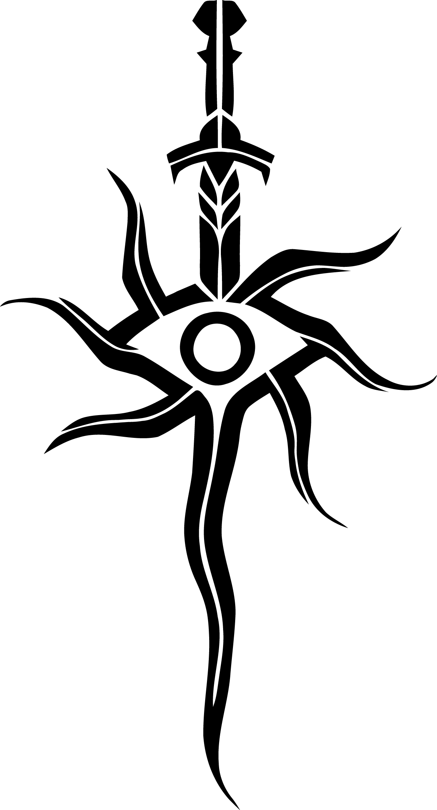
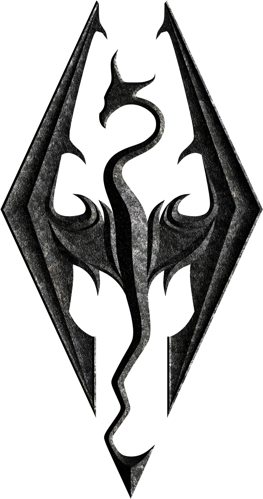
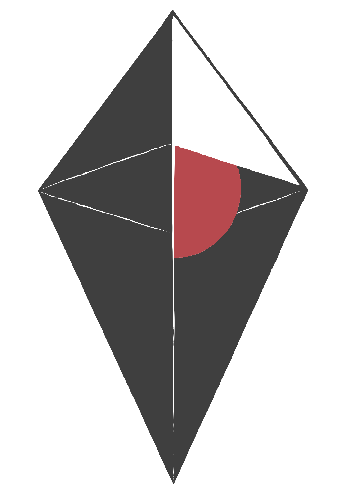

Mezi mé hlavní hobby se řadí hraní her. Což znamená, že jsem jich také plno vyzkoušel, dohrál na 100% a nebo také
jen dokončil hlavní příběh, aby mi v knihovně neseděla zaprášená a nedokončená.
Ohledně žánru nejsem moc vybíravý, ale preference samozřejmě mám. Moje nejoblíbenější jsou MMO, Open World RPG, které
jsou zároveň hlavně fantasy. Nemám nic proti sci-fi, ale radši trávím čas nad něčím ze světa kouzel a magie, rytíři.
Na žánry typu stříleček se bohužel řadím mezi takzvané "bezruké" a tudíž neumím mířit, takže jsou pro mě spíše zdrojem
stresu.
Final Fantasy XIV

"Have you heard of the critically acclaimed MMORPG Final Fantasy XIV?
With an expanded free trial which you can play through the entirety of A Realm Reborn and the award-winning Shadowbringers expansion up to level 80
for free with no restrictions on playtime.""
Asi můj nejoblíbenější žánr je MMO a tím bude i hra od Square Enix, FFXIV. Není to tak úplně kvůli možnosti hrát s mnoho lidmi,
v mém případě jde spíš o to, že hry tohoto žánru mají "nekonečně" rozvíjející svět skrze aktualizace, dokud
vývojáři neukončí podporu. Single player hry, ikdyž jejich příběh je mnohem propracovanější, tak od určitého bodu je konec a už nic nového
hráč nezažije.
Ikdyž tedy možnost hrát s lidmi není ten důvod, proč MMO hraji, tak i přesto jsem během posledních 5
let nasbíral nespočetně mnoho vzpomínek a potkal plno lidí, s některými i v reálném světě.
Dragon Age: Inqusition

Společnost BioWare je známá za více herních řad, mezi
mé oblíbené patří série Dragon Age, konkrétně díl Inquisition, který je v mých
očích i taky poslední dobrý díl.
Jedna z mnoha single player s otevřeným světem, která (už i v předchozích dílech)
měla mechaniku ovládání 4 postav zaráz. Místo klasického asymetrického pohledu
a jako "tahovka" ale, byl normální pohled ze třetí osoby s možností pozastavit čas a každé
postavě zvolit jen jednu akci, co po rozjetí času vykonají.
The Elder Scrolls V: Skyrim

Kdokoliv, kdo se pohybuje ve světě her, o Elder Scrolls od Bethesda slyšel, s (v dnešní době)
nejznámějším zastupitele řady, Skyrim. Hra, kterou Todd Howards dokáže znovu vydat
pravděpodobně na čemkoliv, co má display.
Skyrim, mimo single player, se dá navíc popsat jako takzvaný "úvod" do her s otevřeným
světem a úplnovou svobodou dělat cokoliv se hráčovi zachce. To platí pouze v případě, pokud hráč
není dostatečně starý na to, aby hrál předchozí díl zvaný Oblivion.
No Man's Sky

Velmi známá hra od Hello Games svým skandálem v roce 2016, kdy trailer se velmi lišil od reality.
Reputace No Man's Sky se ale lepší, protože za posledních několik let dostává
aktualizace, které hru více rozšiřují a svým způsobem plní, co bylo slíbeno.
Jedná se o single player s možným multiplayer módem. Původně hra měla být multiplayer
v samotném základu, ale kvůli implementaci herního světa a 16 kvintiliónem planet je
nemožné se s kýmkoliv náhodně potkat. Náplň hry se dá zkrácené popsat jako "prozkoumávání vesmíru".